Tourism
|
Tourism in Uruguay is an important part of the nation's economy. |
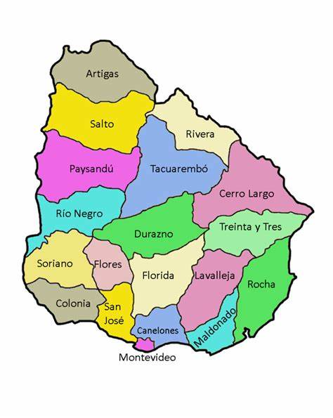 |
Department of Maldonado
PiriapolisPiriápolis is a city and resort of Maldonado Department, located an hour's drive east from the
capital, Montevideo. It has a fixed population of 7,579 inhabitants, although the floating
population is much higher, especially between December and March. It was the first resort town
in
the country, today under the shadow of Punta del Este, largest and most popular. It welcomes
many
Argentine visitors and a growing number of Europeans, although domestic tourism is very
important. |
Punta Del EstePunta del Este is located at the extreme southeast of the country, on a small peninsula that gives it its name and taken as conventional limit on the Uruguayan coast between Atlantic Ocean and River Plate. Its beaches are divided into Mansa, or meek, (river side) and Brava, or brave, (ocean side). The name given to these beaches is because the first, to give to the River Plate and be sheltered from the winds and currents from the Atlantic Ocean, almost always presents its fairly calm waters, while the "Brava" beach, the longer ocean has a much more impetuous waves. Punta del Este is virtually connected to the city of Maldonado and eastward spread widely, encompassing La Barra and José Ignacio. It has 122 hotels, 80 restaurants, an international airport and a yacht port that can accommodate 500 boats. About 8 kilometers southeast of Punta del Este is the Lobos Island full of South American fur seals. |
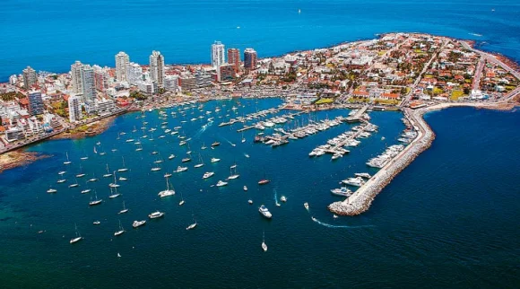 |
Department of Rocha
Punta Del Diablo
| 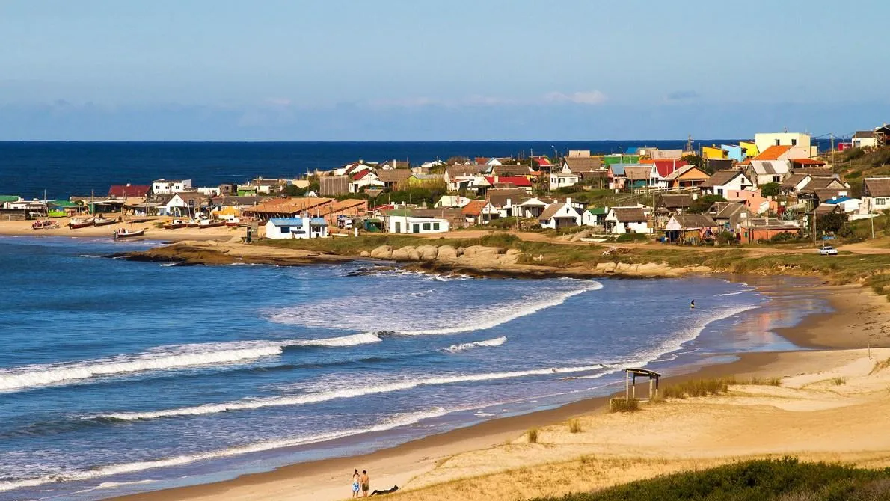 |
The Resort Punta del Diablo was originally a small fishing village. It is located on the coast
of
Rocha Department. It is 298 km from Montevideo. |
La PedreraLa Pedrera is located at km 227.200 of Route 10, Juan Díaz de Solís, a little east of Cape of
Santa
María, on a narrow and small peninsula called Punta Rubia. |
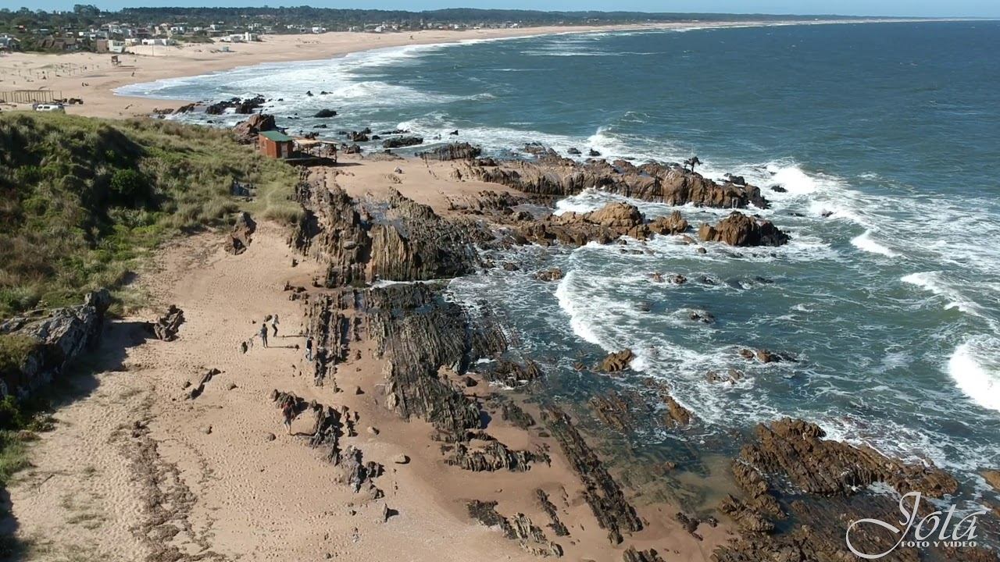 |
La Coronilla
| 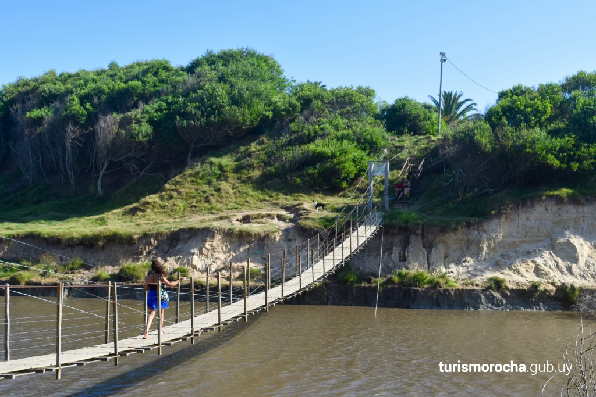 |
La Coronilla is a place where peace of mind is lived. Through its extensive beaches of fine sand
it
can feel the peace of nature. |
Cabo PolonioCabo Polonio is a lovely, lonely fishing village. It owes its attraction to the magical
environment
thanks to its hardiness is generated and the primitive state that is its nature. The time seems
stopped in this place sheltered from the civilization that preserves the peace of a lost place.
No
electricity, no running water, no gas, Cabo Polonio attracts each day more tourists who do not
feel
the lack of these services because they value the ability to disconnect from the world. |
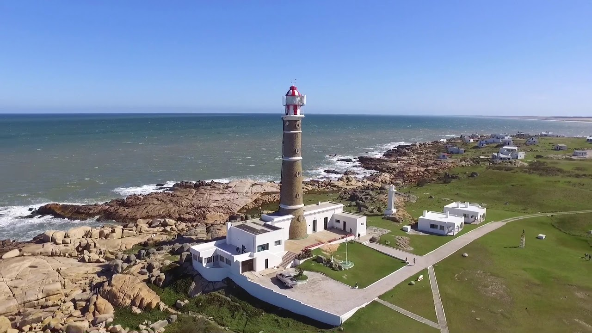 |
Department of Montevideo
|
Montevideo is the southernmost capital city in the Americas. As broad green walks, both within
the
city and in the periphery, are featured the Parque Rodó neighborhood, characterized by the large
namesake park of 25 hectares; Parque Batlle, with several kilometers long situated where is the
Estadio Centenario, stadium hosted the first World Cup in history, two more football stadiums
and
the velodrome of the city, and the running track; the neighborhood of Prado also offers ample
green
spaces and places worth visiting; the Cerro neighborhood, looking at the coast is the Parque Dr.
Carlos Vaz Ferreira along with the Cerro golf club; in the Santiago Vazquez in western border
with
the department of San José, is the Parque Lecocq and south of the same the Parque
Artigas. |
| 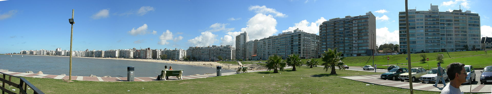 |
| 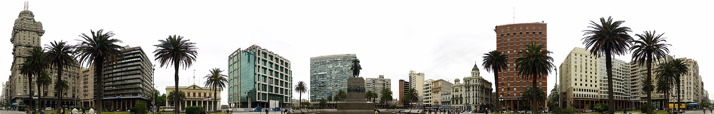 |
Department of Colonia
Colonia Del SacramentoColonia del Sacramento, that locals call Colonia, is the capital of Colonia. Located a few
kilometers southeast of the confluence of the Uruguay River and River Plate, its historic
district
has been declared a World Heritage in 1995, to illustrate the successful fusion of the
Portuguese,
Spanish and post-colonial styles. Because of its proximity with the city of Buenos Aires has
strong
bond with her. There are many travelers who come and go to that destination, as well as the
inhabitants of Buenos Aires who have property there. There was a project to join both cities
through
a binational bridge. The unique preservation of the environment has allowed the use of its
streets
and exterior of several period films such as De eso no se habla (1993) of María Luisa Bemberg
with
Marcello Mastroianni as protagonist. |
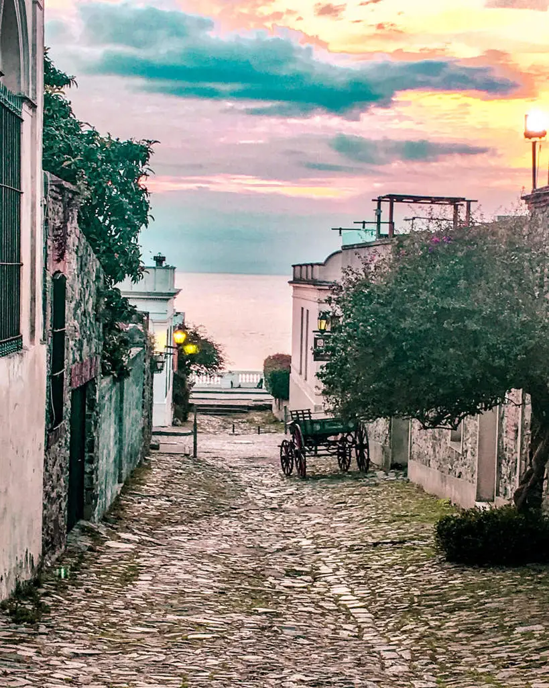 |
Department of Salto
| 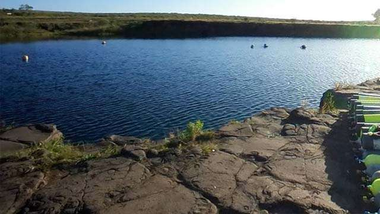 |
Salto is 500 km Montevideo; it has several hot springs resorts. The most important is of Daymán 7 km from the city of Salto, which has a public resort and several private options. 10 km of this city is the Hotel Horacio Quiroga (5 Stars) also features a thermal water park. Going along Route 5 and 70 km is the complex Arapey which has a public sector and a private sector with a Hotel (5 stars). In the departamental capital there buildings of the famous Ing Eladio Dieste. |
Department of PaysanduIn the Uruguayan coast, along the Uruguay River, Paysandú is rooted land in traditions and architectural heritage of the country, festivals and sporting events, generous in delicacies where it mix the river fishing with citrus aromas and perfumes of blueberry plantations. Also in this land it emanate thermal waters that turn into fun and quality of life, and it can live fully in its Thermal Centers, served by staff who receives and serves to tourists with warmth and human quality. |
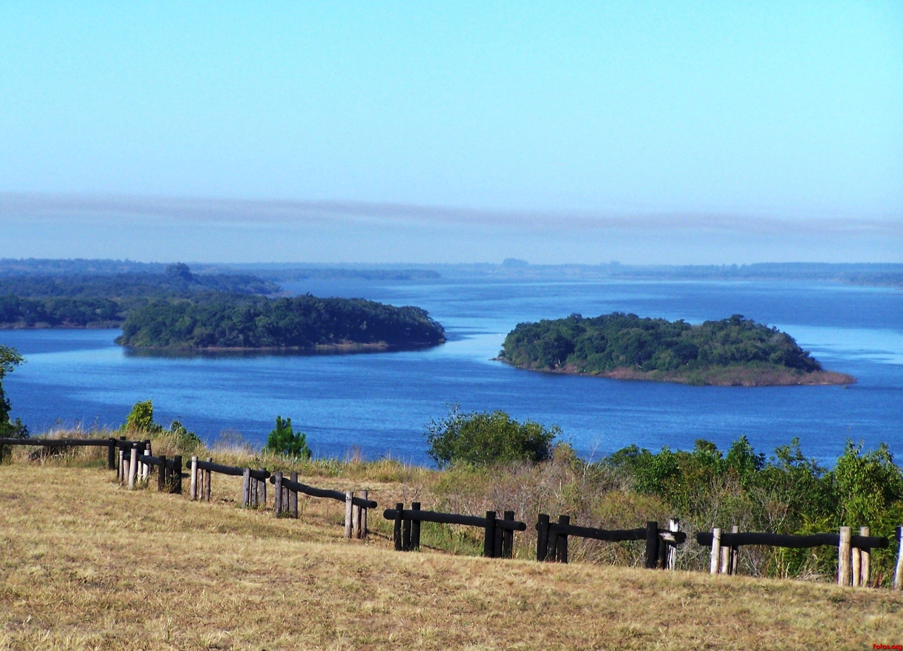 |
Department of Artigas
| 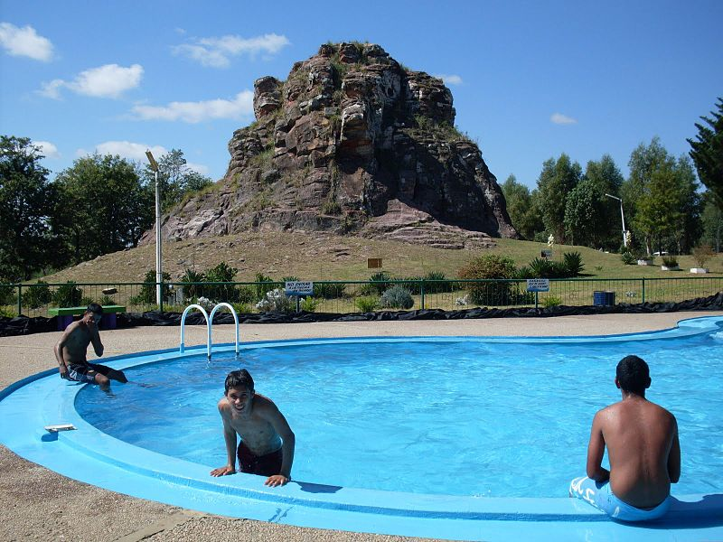 |
The Artigas Department has several touristic attractions which include: the Piedra Pintada
(Painted
Rock) with swimming pools, camping and fauna reserve 18 km from the capital, the park on the
Cuareim
river called Paseo 7 de Setiembre where is the Estadio Matías González, also with camping area
and
barbecue; while in the vicinity of Bella Unión are found: La Barra, the Parque General Rivera,
and
Los Pinos resort on the Uruguay River. |
Department of LavallejaLavalleja is one of the departments of the country with most scenic variations, but is recognized
as
the center of mountain tourism in Uruguay. The landscape stretches along the la Cuchilla Grande
and
its branches which are surrounded by rivers, streams, creeks and waterfalls. |
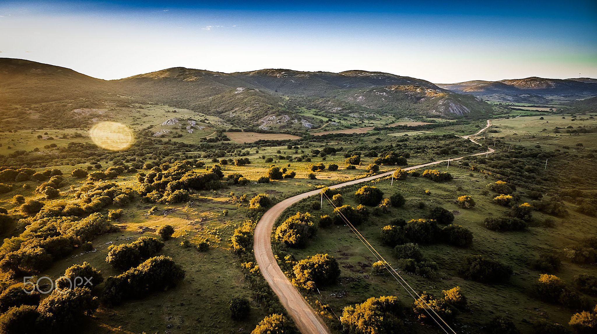 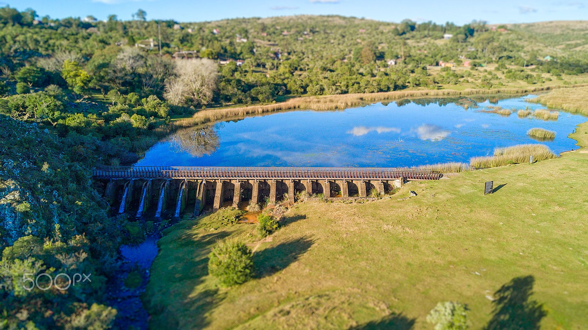 |
Department of Durazno
| 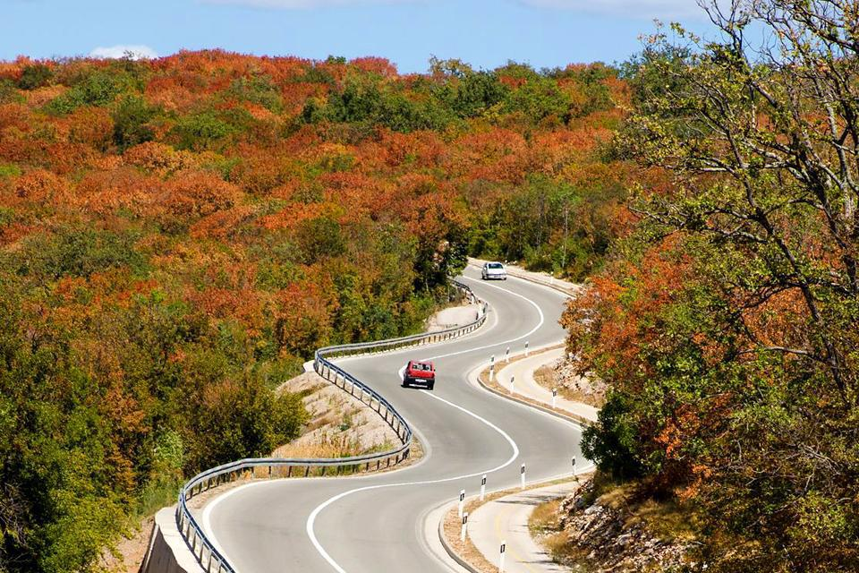 |
The departament is located in the center of the country, it is bordered by the Department of
Flores,
Florida, Río Negro, Tacuarembó, Cerro Largo and Treinta y Tres. |
Department of TacuaremboAt north of the country, is the most widespread department of Uruguay. In it, it highlight the Iporá Resort and Valle Edén, near the city of Tacuarembó, and San Gregorio de Polanco, with its murals, made by some of the most important Uruguayan artists, and its sandy beach on shores of Artificial Lake Rincón de Bonete. Valle Edén attracts a special attraction for visitors in search of the birthplace of Carlos Gardel. |
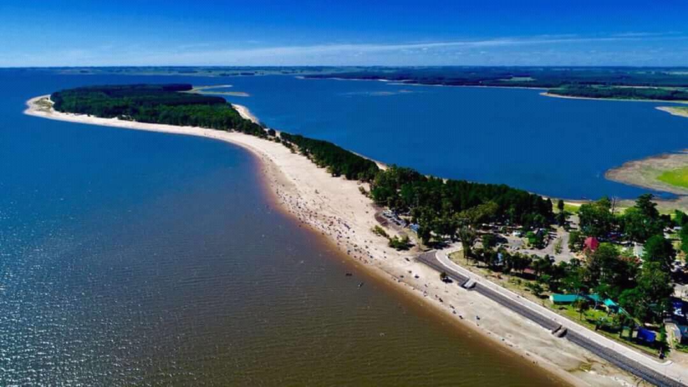 |
Department of Rivera
| 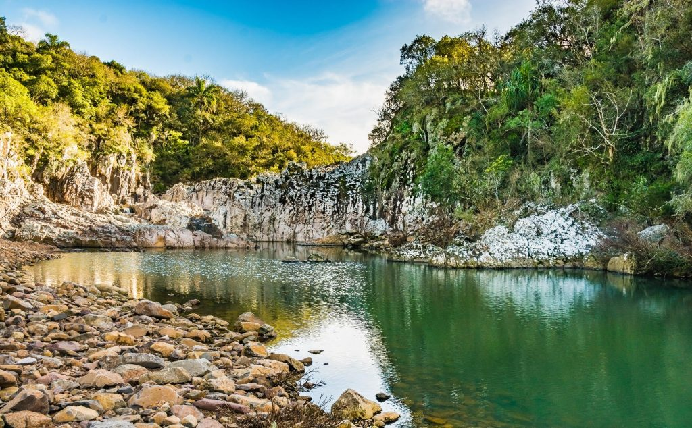 |
Rivera is located north of the Uruguay, is a department that is in a big commercial boom, its main source of tourism is shopping tourism, based on duty-free shops; there are currently approximately 70 duty-free shops in the city and in 2012 a shopping mall, Siñeriz Shopping, was opened. Two more shopping malls are scheduled to begin construction. In the department there is also ecotourism, such as the Lunarejo, which was recently named Protected Area. |